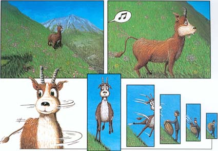

La chasse au dahu

Bien que désormais classée comme espèce menacée (avec la mention
"En danger"), la chasse au dahu était un évenement traditionnel en
Savoie qui nécessitait des méthodes de chasses originales. La
techique consistait s'approcher le plus près possible de l'animal et
de siffler très fort afin de le surprendre. Celui-se se retourne alors
et du fait de l'assymétrie de ses pattes, culbute dans le vide pour
atterrir directement dans le sac du chasseur posté en contrebas.